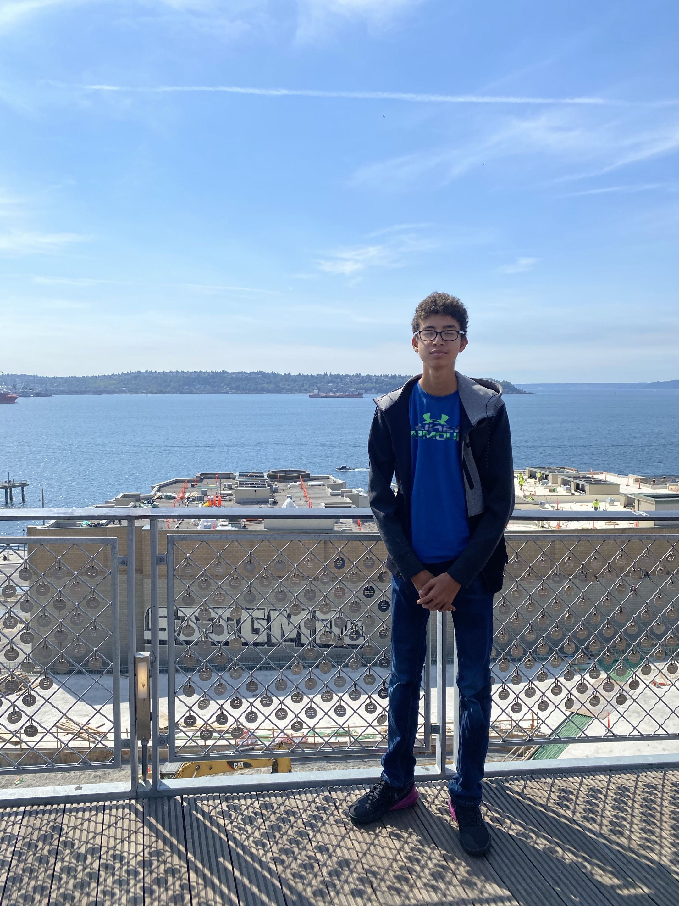
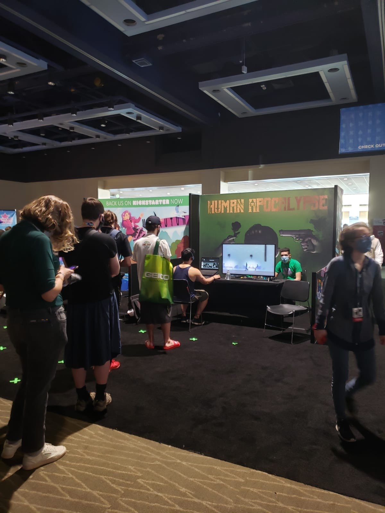
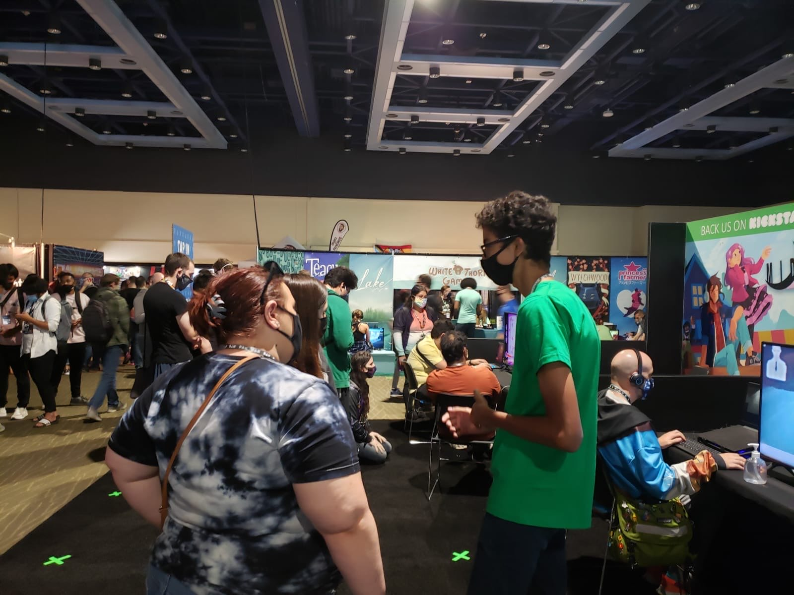

EXPERIENCE
Professional & Event Experience
My experience includes game-industry event support, soccer operations, officiating, communication, conflict management, and working in high-pressure environments.
PAX WEST 2021
Event Support
Euphoric Brothers
Human Apocalypse
I helped Euphoric Brothers during PAX West 2021 while they were presenting Human Apocalypse.
I helped prepare the booth, interacted with attendees, and encouraged interested visitors to check out the game.
It gave me an early opportunity to experience how an indie game is presented directly to players at a major gaming convention.



COLORADO SOCCER ASSOCIATION
Site Coordinator
As a Site Coordinator, I help maintain safe, organized, and professional match environments while acting as a communication point between referees, coaches, scorekeepers, and league operations.
Referee Protection & Reporting
Act as an important reporting touchpoint under U.S. Soccer's Referee Abuse Prevention Policy as enforced by the Colorado Soccer Association.
Incident Documentation
Submit official Site Coordinator reports when misconduct or abuse toward match officials needs to be formally documented.
Emergency Escalation
Use the referee emergency reporting process when an incident requires immediate league attention.
Match Coordination
Coordinate with coaches, referees, and scorekeepers to help matches begin and end according to schedule.
Sideline Management
Monitor sideline behavior and respond to immediate sportsmanship concerns or disputes during matches.
Communication
Work with multiple groups during active match operations while remaining calm and professional when problems arise.
COLORADO SOCCER ASSOCIATION
Soccer Referee
Refereeing has given me years of experience making decisions quickly, communicating clearly, managing disagreements, and working as part of an officiating team.
Matches require constant attention and the ability to make impartial decisions under pressure while maintaining control of the game.
Decision Making
Make rapid and impartial decisions during competitive matches.
Conflict Management
Handle disagreements involving players and coaches while maintaining composure and professionalism.
Teamwork
Coordinate with other referees to maintain consistent decisions and match control.
WHAT I BRING FORWARD
Skills beyond programming
These experiences have helped me become comfortable communicating with different groups of people, adapting quickly when situations change, and making decisions when there is not much time available.
I bring those same skills into software and game development when debugging problems, collaborating with others, and working through unfamiliar technical challenges.